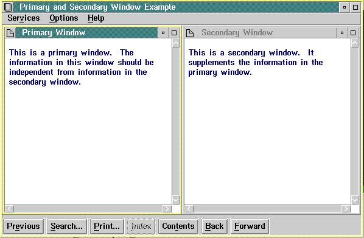

Windows can be considered to be subdivisions of the screen. They can be either primary or secondary windows. A primary window is where the main topic appears, or where the interaction between a user and an object or application takes place. A secondary window usually supplements the information in the primary window. It is closed when its primary window is closed. The following figure shows a simple multiple-window design with a primary and secondary window.

A Primary and Secondary Window Arrangement
To create the two-window format shown in the figure, you must define the size of each window, then position them within the boundaries of the coverpage window. When defining window size, you specify horizontal and vertical areas of the window, using window coordinates.